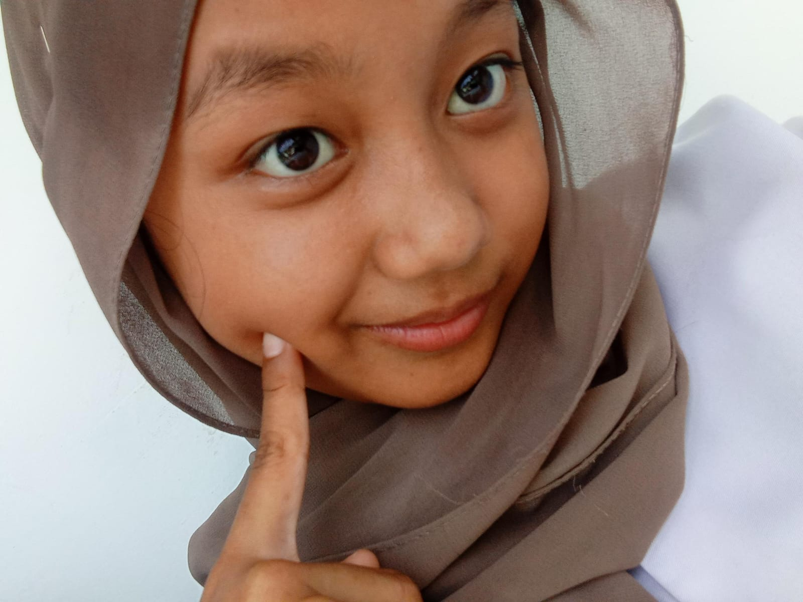

Hello, I'm Jannatin Aliyah
A dreamer born on 26 November 2008, who finds magic in novels and spreads love through words.
About Me
I’m Atin, a lover of stories that transport me to new worlds. Reading novels isn’t just a hobby, it’s my way of exploring endless possibilities. Life for me is like a book—every moment is a chance to write a beautiful new chapter.
"In every word, I find a piece of myself."
Gallery


Interesting things about me
Here's a very interesting thing about me:
- *I love the color yellow because it feels bright and full of energy, just like my never-ending enthusiasm
- *I'm also a big fan of matcha; its unique flavor always makes my day more delightful.
- *Even though I'm small, I always feel big in every step I take.
- *I'm very agile, always quick to respond and ready for whatever comes my way.
- *And of course, I'm smart, always striving to think wisely and learn new things every day
Contact Me
+62 882 6905 9314 (Arief/Cowok Nya)+62 857-8882-2649 (Atin/Owner)